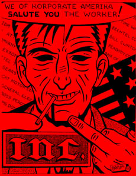

Submitted on Tue, 08/16/2005 - 1:29pm
Disclaimer - The following article is reposted here because it is an issue with some relevance to the IWW. The views of the author and the publisher do not necessarily agree with those of the IWW and vice versa.
Truckers Demanded Mandatory Fuel Surcharges in a Protest Convoy Along South Florida's Freeways:
By Jane Bussey and Larry Lebowitz - Miami Herald, August 11, 2005
Hundreds of towering truck cabs streamed down South Florida's freeways on Wednesday in a protest convoy to demand mandatory fuel surcharges, snarling traffic and irritating travelers across the Miami metropolitan region in the process.
Trucker Marvin Palacios had grievances as broad as the wide-brimmed cowboy hat that topped his 6-foot-2-inch frame.
"Oil is becoming more expensive every day and the owners of the trucking companies don't want to pass fuel surcharge to the drivers," said Palacios. "I have a family. The cost of living is going up and we aren't earning any more."
The caravan, organized by the International Brotherhood of Teamsters and the International Longshoremen's Association, was staged to encourage Congress to pass a mandatory fuel surcharge law that would automatically pay truckers more as diesel prices rise.
Submitted on Tue, 08/16/2005 - 1:00pm
 By Eric Lee - From www.labourstart.org:
By Eric Lee - From www.labourstart.org:
Last week, in an extraordinary display of corporate bullying, the company which provides British Airways with its in-flight meals at Heathrow Airport sacked some 800 workers -- using a megaphone.
In response, baggage handlers at Heathrow -- members of the same union as the Gate Gourmet workers who had just lost their jobs -- walked off the job in solidarity. Within hours, the entire airport was essentially shut down, stranding thousands of passengers and costing millions of pounds.
And yet the company, the American-owned Gate Gourmet, refused to consider reinstating the sacked workers and negotiating a fair deal with the union.
According to some media reports yesterday, the company deliberately provoked its own employees in order to rid themselves of "troublemakers".
The dispute has captured the attention of the mass media in Britain and elsewhere, and has been covered extensively on LabourStart.
Now the workers have appealed through their union, the Transport and General Workers Union (TGWU), and their global labour federations (the IUF and ITF), for your help.
Submitted on Wed, 08/10/2005 - 6:30pm
Original article and photos available at: NYC Indymedia
http://nyc.indymedia.org/en/2005/08/55275.html
Manhattan Billionaires could not sip their lattes idly while StarBucks Corporation faced attacks by pro-union protesters on Saturday, August 6. Instead, a bevy of Billionaires recognized our #1 specialty coffee retailer for its outstanding performance in union-busting and its continuing commitment to pay its baristas unlivable wages.
To touch off our defiant 'sip-in’, the Billionaires proffered a toast to “record-breaking profits”, while Diva Denz phoned her stock broker, demanding 1,000 more shares of Starbucks stock. But this celebration was cut short by the arrival of, alas, StarBucks Union picketers! Dr. DeBooks, in a fury not often exhausted by a Billionaire, snatched one of the Union’s flyers and brought it inside the store. Reading out loud in unutterable indignation, he sounded off the Union Workers’ grievances, including absurd things like livable wages, a decent number of hours, bathroom breaks, and similar claptrap that you might often hear the indentured class complain about.
Submitted on Sun, 08/07/2005 - 12:57am
Disclaimer - The following article is reposted here because it is an issue with some relevance to the IWW. The views of the author and the publisher do not necessarily agree with those of the IWW and vice versa.
By Jeff Shantz (Toronto-NEFAC)
INTRODUCTION
 In recent years a variety of social movement and environmental commentators have devoted a great deal of energy to efforts which argue the demise of class struggle as a viable force for social change (See Eckersley, 1990; Bowles and Gintis, 1987; Bookchin, 1993; 1997). These writers argue that analyses of class struggle are unable to account for the plurality of expressions which hierarchy, domination and oppression take in advanced capitalist or what they prefer to call "postindustrial" societies (See Bookchin, 1980; 1986). They charge that class analyses render a one-dimensional portrayal of social relations. The result of this has been a broad practical and theoretical turn away from questions of class and especially class struggle.
In recent years a variety of social movement and environmental commentators have devoted a great deal of energy to efforts which argue the demise of class struggle as a viable force for social change (See Eckersley, 1990; Bowles and Gintis, 1987; Bookchin, 1993; 1997). These writers argue that analyses of class struggle are unable to account for the plurality of expressions which hierarchy, domination and oppression take in advanced capitalist or what they prefer to call "postindustrial" societies (See Bookchin, 1980; 1986). They charge that class analyses render a one-dimensional portrayal of social relations. The result of this has been a broad practical and theoretical turn away from questions of class and especially class struggle.
In my view, both orthodox Marxist constructions of class struggle and the arguments raised against that conceptualization have been constrained by conceptually narrow visions of class struggle. Commentators have either taken class to mean an undifferentiated monolith (Bookchin, 1986; 1987) which acts, or more often fails to act, as the instrumental agent in history or else as a fiction generated to obscure hopelessly divided and antagonistic relations within the working class (Laclau and Mouffe, 1985; Bourdieu, 1987). What is generally missing from these otherwise disparate accounts is a dynamic understanding of people as workers and workers as activists.
Submitted on Wed, 08/03/2005 - 4:50pm
The former Pizza Time workers met with owner Heath Flores to discuss thereinstatement of four workers who lost their jobs in February. Floresbroke off negotiations on Tuesday by flatly refusing all six terms of thewritten proposal. We had hoped Flores would work with us to reach anagreement. We offered to draw up a new proposal with Flores' input, butthat idea was refused as well. Flores final offer was the same as hisfirstwe could turn in applications and may be hired and fired at will. We feel Flores is not taking the negotiations seriously and never intendedto consider our position.
History of Negotiations with Heath Flores
The former Pizza Time workers tried to arrange a meeting three timesbefore the store re-opened, but were met with closed minds on eachoccasion. On July 20th we returned to the corner of 4th and Jefferson tohold picket signs and share our story. At this point Flores agreed tomeet and discuss the terms for reinstatement in writing.At the first two negotiation meetings on July 29th and August 1st, we madeit clear that there was no animosity against Flores personally; what wewanted was resolution for the injustices served to us by former ownersShane Bloking and Richard Kelley. We asked Flores to recognize that theworkers unity and the communitys stand for justice ultimately droveShane Bloking out of the state, and gave Flores the opportunity to ownOlympia Pizza Time.